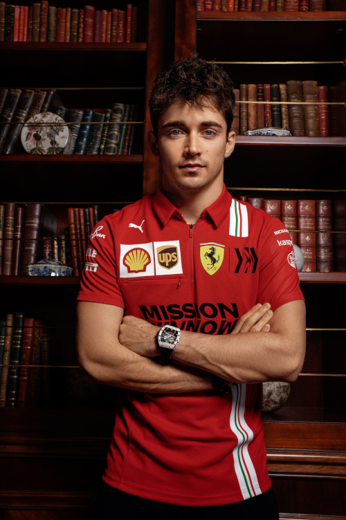
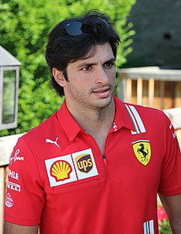

História
A Scuderia Ferrari foi fundada por Enzo Ferrari em 1929 e tornou-se a equipe de corrida da Alfa Romeo. Em 1938, a Alfa Romeo tomou a decisão de entrar nas corridas com seu próprio nome, que institui a organização Alfa Corse, que absorveu o que tinha sido a Ferrari. Enzo Ferrari não concordou com esta mudança na política e foi, finalmente, demitido pela Alfa em 1939. Os termos de sua saída proibiu-o de participar do automobilismo em seu próprio nome, por um período de quatro anos.
Em 1939, a Ferrari começou a trabalhar um carro de corrida de sua autoria, o Tipo 815 (oito cilindros, 1,5 L de deslocamento). O 815S, projetado por Alberto Massimino, foram, assim, os primeiros carros da Ferrari. A Segunda Guerra Mundial pôs um fim temporário às corridas. A Ferrari e concentrou-se em uma alternativa de uso para sua fábrica durante os anos de guerra, fazendo o trabalho de máquinas-ferramenta.
Após a guerra, a Ferrari recrutou vários de seus ex-funcionários da Alfa e estabeleceu uma nova Ferrari, querendo projetar e construir seus próprios carros.
Pilotos
-
Charles Leclerc
- Nacionalidade: Monaco
- Idade: 25 anos
- Corridas: 111
- Vitórias: 5
- Pódios: 25
- Campeão: 0 vez
-
Carlos Sainz
- Nacionalidade: Espanha
- Idade: 28 anos
- Corridas: 171
- Vitórias: 1
- Pódios: 15
- Campeão: 0 vez
*Dados do dia 26/06/2023